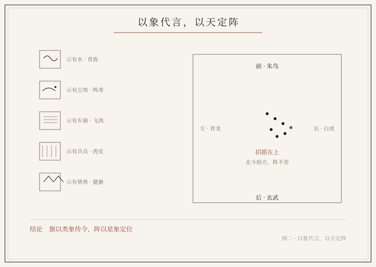

曲礼上 · 一·一百零七 · 第 105 课
行军之仪：史官带笔，司盟之士带盟辞；前有异状，则以五种旌旗示意；列阵象天，四方四兽，北斗在上。
说什么事：史载笔，士载言。前有水则载青旌，前有尘埃则载鸣鸢，前有车骑则载飞鸿，前有士师则载虎皮，前有挚兽则载貔貅。行：前朱鸟而后玄武，左青龙而右白虎，招摇在上，急缮其怒。进退有度，左右有局，各司其局。
落在哪一层：制，兼及礼意。讲的是「无声之令」。
为何编在此位：上节言车旗之饰，此节言车旗之用。饰与用，一静一动。
【经】史載筆，士載言。前有水，則載青旌。前有塵埃，則載鳴鳶。前有車騎，則載飛鴻。前有士師，則載虎皮。前有摯獸，則載貔貅。行：前朱鳥而後玄武，左青龍而右白虎，招搖在上，急繕其怒。進退有度，左右有局，各司其局。
【注】謂從於會同，各持其職以待事也。筆謂書具之屬，言謂會同盟要之辭。載謂舉於旌首以警眾也。禮，君行師從，卿行旅從。前驅舉此，則士眾知所有，所舉各以其類象。青，青雀，水鳥。鳶鳴則將風。鴻，取飛有行列也。士師謂兵眾。虎，取其有威勇也。貔貅亦摯獸也。《書》曰：「如虎如貔。」以此四獸為軍陳，象天也。急猶堅也。繕讀曰勁。又畫招搖星於旌旗上，以起居堅勁，軍之威怒，象天帝也。招搖星在北斗杓端，主指者。度謂伐與步數。局，部分也。
史／士 疏「史谓国史，书录王事者」；「士谓司盟之士，言谓盟会之辞，旧事也」。
载 注「举于旌首以警众也」。疏辨作「戴」者，本亦作戴。
青旌 注「青，青雀，水鸟」。疏「军行若前值水，则画为青雀旌旗幡上，举示之」。
鸣鸢 注「鸢鸣则将风」。疏「鸱鸣则风生，风生则尘埃起……故画作开口，如鸣时也」。
飞鸿 注「鸿，取飞有行列也」。疏「雁飞有行列，与车骑相似」。
士师 注「士师谓兵众」。非《周礼》之士师。
貔貅 注「亦挚兽也」，引《书》「如虎如貔」。
招摇 注「在北斗杓端，主指者」。疏引《春秋运斗枢》七星之名，第七摇光即招摇。
急缮其怒 注「急犹坚也。缮读曰劲」。疏「坚劲奋勇，如天帝之威怒」。
度 注「谓伐与步数」。疏引《牧誓》「不愆于六步七步」「四伐五伐」；「一击一剌为一伐」。
史官带着书写之具，司盟之士带着盟会之辞。前面有水，就举起画着青雀的旌；前面起尘埃，就举画着张口鸣叫的鸢的旌；前面有车骑，就举画着成行飞雁的旌；前面有兵众，就举虎皮；前面有猛兽，就举貔貅。行军列阵：前为朱鸟，后为玄武，左为青龙，右为白虎；招摇星旗竖在中军之上，使士卒坚劲奋发。进退有步数，左右有分部，各守其分。
一节两层：前一层讲「以象代言」，后一层讲「以天定阵」。人众而声不可遍传，故以旗代令；陈法无所据，故以星象为据。皆是把不可见的东西立成可见的。
第一层 各持其职 史持笔，士持言。所载各异，所待同事。会盟之时，谁都不能空手。
第二层 各以其类象 青雀象水，鸣鸢象风，飞鸿象行列，虎象兵众，貔貅象猛兽。象不是装饰，象是速记。
第三层 象天而阵 注「以此四兽为军陈，象天也」。前南后北，左东右西，四宿之名即四方之位。
第四层 度与局 度是步数与击刺之数，局是部分。有度则不乱，有局则不滥。疏「各有部分，不相滥也」。
与今日何干 组织越大，越要靠「象」传令：颜色、标识、分区。定得越早，临事越不乱。
| 左 | 右 |
|---|---|
| 史载笔，士载言 | 各持其职，以待会同 |
| 青旌 | 青雀水鸟，示前有水 |
| 鸣鸢 | 鸢鸣将风，示前有尘埃 |
| 飞鸿 | 雁有行列，示前有车骑 |
| 虎皮 | 虎有威勇，示前有兵众 |
| 貔貅 | 挚兽，示前有猛兽 |
| 四兽布阵 | 前朱鸟后玄武，左青龙右白虎 |
| 招摇在上 | 北斗指方，阵不差 |
| 进退有度，各司其局 | 有步数，有部分 |
画一列行军队伍自左下向右上推进，队前竖五面旗，从近到远依次为：画水鸟的旗、画张口飞鸟的旗、画成行飞雁的旗、一片挂在竿上的虎皮、一头短身猛兽的旗。队伍中央另竖一面较高的旗，旗上画七颗星连成的斗形。四角只以极淡的方位线示意，不画人面、不写文字。赭色只用在中央那面星旗的竿头。
